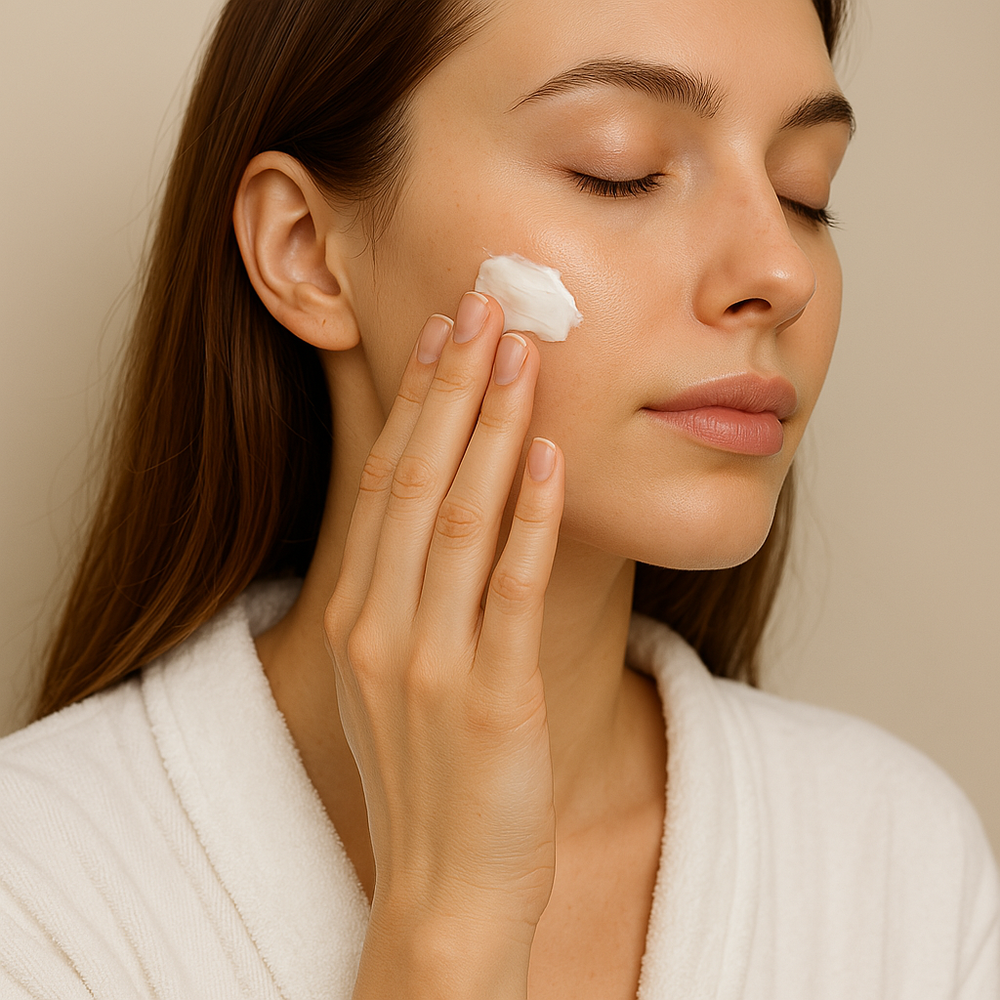

Ihonhoito
Kaikki niksit & vinkit vaivattomaan ihonhoitoon

1. Peruna ihonhoidossa
Peruna on tuttu kaikille ruokapöydän antimena,
mutta tiesitko, että perunaa voi käyttää myös ihonhoidossa?
Perunassa on paljon C-vitamiinia, B-vitamiinejä & tärkeitä ravintoaineita,
jotka ovat hyödyllisiä terveydelle & iholle.
raaka peruna vähentää ikääntymisen merkkejä & poistaa aknea ja näppylöitä
Perunan käyttäminen ihonhoidossa on helppoa:
Laita raakoja perunaviipaleita ihollesi, anna vaikuttaa 15-20minuuttia & pese pois